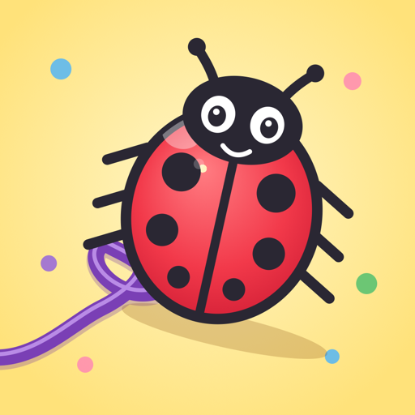

Last updated 12 November 2026
The following is kept only on your device, inside the app’s private storage. It is never sent to us or to anyone else:
Deleting a drawing in the app, or deleting the app, removes this information.
Nothing. We do not run a server, we do not ask for a name, email address, age or location, and we do not use analytics, advertising or tracking tools of any kind. The app does not contain third-party code that collects data.
Doodlebug does not use the camera, microphone, contacts, location or any other personal data. The read-aloud voice is generated on the device by iOS.
Pictures only leave the device when a grown-up chooses to share, print or save one. These actions sit behind a simple grown-up check. When you share or print, the picture goes to the app or printer you choose, and that destination’s own privacy policy applies.
A free selection of drawings is included. The rest can be unlocked with a one-time purchase, which is handled entirely by Apple through the App Store, after a grown-up check. We never see payment details or personal information. The app only learns whether the purchase has been made on that Apple ID.
Doodlebug is designed for children. Because it collects no personal information, there is nothing to share, sell or disclose. It contains no advertising, no links out to websites, and no social features.
If this policy changes, we will update this page and the date above. Any change that affected children’s privacy would be made clear in the app’s update notes.
Questions about privacy? Open an issue at github.com/SmilePineapple/doodlebug-legal/issues. Please do not include any personal information in a public issue.
© 2026 SmilePineapple. Doodlebug is a drawing app for children.